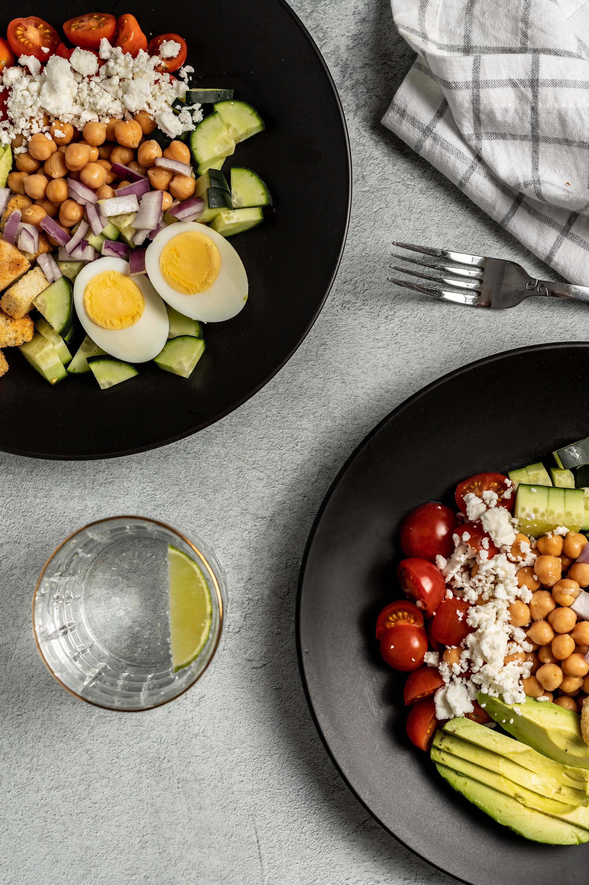

- 저탄고지 다이어트 5계명
- 빠르게 빼는 저탄고지 방법
- 몸무게 유지하는 저탄고지 방법

1. 칼로리는 잊어라
먹는 양을 줄이고 운동까지 해도 꿈쩍없는 체중 때문에 스트레스받고 있는가?
문제는 당신의 '몸'이 아닌 당신의 '생각'이다.
저칼로리에 대한 강박은 각종 대사 저하증상을 일으키며,
체중 감량을 방해하고, 키토제닉으로의 이행에 걸림돌이 된다.
그러므로 키토제닉 5계명의 첫 번째는 바로 "칼로리는 잊어라"이다.
2. 단 맛과 이별하라
키토제닉 다이어트에 성공하기 위해서는 입맛을 바꿔야 한다.
정제 가공된 탄수화물의 인위적인 단 맛과 완전히 이별하고,
자연식품의 맛에 익숙해져야 지속할 수 있고 효과를 볼 수 있다.
그러므로 키토제닉 5계명의 두 번째는 바로 "단 맛과 이별하라" 이다.
3. 건강한 지방을 적극적으로 섭취하라
키토제닉의 핵심은 몸이 사용하는 연료를 탄수화물에서 지방으로 바꾸는 데 있다.
지방을 태우는 몸을 만드는 것이 단 맛과 이별함으로써 탄수화물 고갈이라는 조건을 만들었다면,
그다음에는 건강한 지방을 섭취함으로써 내 몸에 지방 사용법을 알려줄 차례이다.
특히 키토제닉 초기에는 5계명의 세 번째 "건강한 지방을 적극적으로 섭취하라"를 반드시 명심해야 한다.
4. 자연식품을 선택하라
지방을 태우기 위해 반드시 필요한 것이 하나 더 있다. 바로 미량 영양소이다.
지방을 분해시켜줄 미량 영양소는 자연식품에서만 얻을 수 있다.
식단에서 지방의 비율을 아무리 높인들, 미량 영양소가 없는 가공 식품 위주로 섭취하면 체중 감량은 불가능하다.
그러므로 키토제닉 5계명의 네 번째는 "자연식품을 선택하라"이다.
5. 배고프면 먹고 배부르면 먹지 마라
배가 고프면 먹되, 배가 부르면 먹지 않아도 된다.
먹고 싶은 만큼 먹어도 살이 찌지 않고, 적게 먹는다고 해서 대사량이 떨어지지 않는다.
이 꿀 같은 식이요법은 이제까지 온갖 다이어트에 지친 당신 삶의 만족도를 끌어올릴 것이다.
키토제닉 5계명의 다섯 번째는 "배고프면 먹고, 배부르면 먹지 마라"이다.